Laravel Framework Version 5.4
Giới thiệu
Đây là github-page được viết bởi 1412579 - Vũ Minh Trí và 1412564 - Trần Thuỳ Bích Trâm với nội dung chính là tìm hiểu về Laravel Framework Version 5.4, tất cả nội dung tìm hiểu được tổng kết và sử dụng cho môn học Ứng dụng phân tán TH2014 do thầy Hoàng Anh Tú phụ trách.
Khoa Công nghệ thông tin - Trường ĐH Khoa Học Tự Nhiên TPHCM
MVC trong Laravel Framework
Giới thiệu về MVC
Điều đầu tiên nói đến đó chính là mô hình MVC, đây là mô hình phổ biến mà hầu hết các framework đều sử dụng, ngoài ra chúng ta còn có thể nhắc đến CodeIgniter, sử dụng MVC - một mô hình nâng cấp từ MVC. Vậy chúng ta hãy thử tìm hiểu MVC của Laravel nó như thế nào nhé!!!
MVC là mô hình 3 lớp với ba thành phần chính:
- Model là nơi chưa các nghiệp vụ logic, các phương thức thức xử lý, tuy nhiên đa phần model là nơi chúng ta sử dụng để truy xuất database.
- View là hiển thị các giao diện của website dựa vào hành động của người dùng, là chính các file HTML của chúng ta. Trong Laravel cũng có một thư mục view riêng.
- Controller chính là nơi nhận request của người dùng, từ đó có thể gửi lệnh cho Model hoặc View tùy vào request của người dùng.
Có thể hiểu dễ hơn, Controller chính là nơi nhận lệnh từ người dùng, nếu người dùng thực hiện yêu cầu phải truy xuất xuống database, khi đó Controller sẽ gửi lệnh xuống Model, Model thực hiện yêu cầu của Controller sau đó lại ngược lại Controller, Controller nhận được dữ liệu và chuyển về View, từ đó View sẽ gửi thông tin dạng giao diện cho người dùng. Ngoài ra nếu yêu cầu không liên quan tới database thì Controller sẽ chuyển hướng thẳng về view mà không cần gửi lệnh cho Model.
MVC giúp cho chúng ta quản lý mã nguồn dễ hơn, dễ nâng cấp và bảo trì source code của mình, tạo ra một chuẩn giúp cho teamwork tốt hơn, thống nhất trên một khuân khổ, tránh tình trạng "râu ông này cắm cằm bà kia" khi nhiều người code một project, và nhiều hơn thế nữa
MVC trong Laravel Framework
Về cơ bản, Laravel đã cung cấp cho ta một mô hình MVC quá tuyệt vời, chúng ta không phải làm quá nhiều việc khi chúng ta code "PHP thuần" nữa. Với các thành phần trong mô hình MVC được đặt rất rõ ràng và người dùng dễ dàng thao tác với mô hình MVC.

Trong Laravel, chúng ta hãy chú ý tới những thư mục được Laravel tạo sẵn, nơi mà chúng ta sẽ thực hiện đúng mô hình MVC.
-
Thư mục resources: Đây là thư mục nơi mà chúng ta chứa các file giao diện, cụ thể là sẽ nằm trong thư mục view, Laravel cung cấp cho chúng ta thao tác gọi view rất đơn giản, nó được mặc định trong Laravel nên chúng ta không cần phải cấu hình một đường dẫn link tới thư mục này. Ngoài ra còn có các thư mục khác dùng để upload file, hoặc chứa thông tin giao diện đa ngôn ngữ và nơi chưa các file Front-end (tuy nhiên đa phần chúng ta đều để các file Front-end tại thư mục Public)

 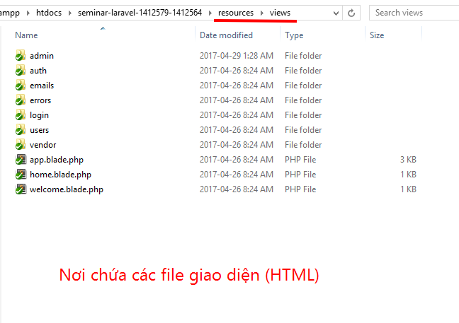
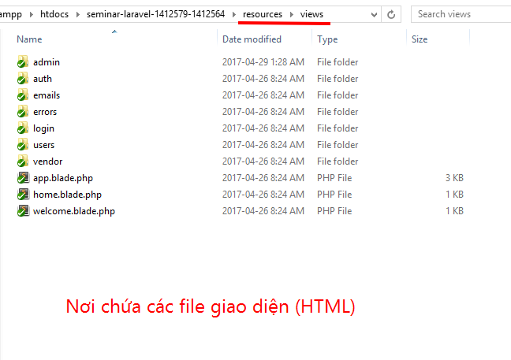
-
Thư mục public: đây là thư mục đúng nghĩa như cái tên của nó, public là nơi ta chứa các file cần thiết, chả hạn như đối với mình thì đây là nơi mình sử dụng để chứa các file CSS, JS, và một số hình ảnh upload được mình lưu tại đây.
 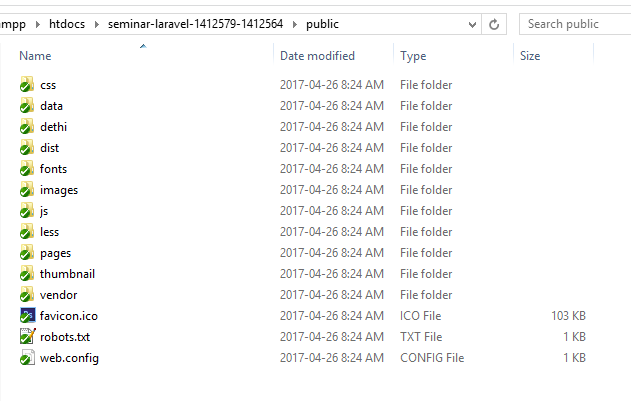
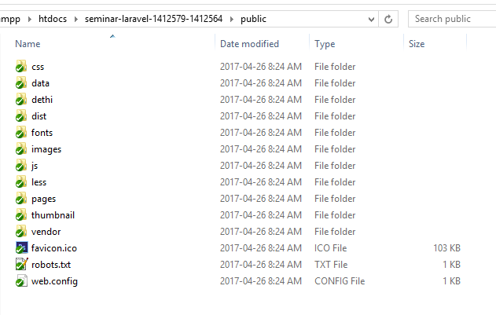
-
Thư mục app - nơi chưa đựng những gì tinh tuý nhất trong Laravel: quả thật vậy, đây chính là nơi nòng cốt của cả trang web, trong thư mục này, chúng chứa toàn bộ những những xử lý của chúng ta thông qua Http\Controller cũng như chứa các file Model giúp chúng ta thao tác cơ sở dữ liệu. Ngoài ra nó còn chứa các file Request - nơi chúng ta có thể sử dụng Validation mà Laravel cung cấp sẵn cũng như middleware giúp chúng ta thiết lập Authentication cho ứng dụng.
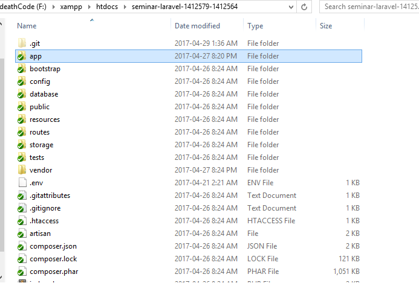

Laravel (phiên bản 5.4) cung cấp cho chúng thêm một thành phần khác đó chính là Route, nơi định tuyến, dẫn đường cho các HTTP Request được gửi tới nơi mà nó mong muốn. Với thư mục Route thì nó sẽ giúp cho việc quản lý các định tuyến được tốt hơn.
Đối với phiên bản 5.4, Laravel đã đưa Route ra một thư mục riêng thay vì tích hợp nó vào thư mục App như phiên bản trước (cụ thể phiên bản 5.0), cùng với đó chia Route thành các file khác nhau thay vì gộp như cũ (api, channel, console, web), giúp quản lý tất cả các Route tốt hơn.
Composer và thao tác cmd trong Laravel
Về cơ bản không có quá nhiều thứ để nói về Composer, chúng ta sử dụng nó để tải các thư viện của PHP, thay vì phải tải bằng tay, mỗi project ta sẽ phải tải về những thư viện khi chúng ta sử dụng, vì Composer sẽ chỉ cài đặt tại chính thư mục chứa project đó.
Ngoài omposer thì Laravel cũng cung cấp cho chúng ta một thứ khác, đó chính là artisan. Đây là một CLI được Laravel tích hợp giúp Lập trình viên tạo những file cần thiết cực kỳ nhanh chóng và hữu dụng khi phát triển ứng dụng.
Ví dụ một cụ thể dễ dàng, bạn hoàn toàn có thể tạo ra các file _model_ hoặc _controller_ thông qua artisan chả hạn. Hoặc thứ mà chúng ta hay dùng đến nhất mỗi khi phát triển một ứng dụng web đó chính là _database_, artisan cũng giúp chúng ta những thao tác thông qua _Migration_ để tạo và phát triển _database_ nhanh hơn. Dưới đây là một số các câu lệnh artisan hỗ trợ, bạn có thể kiểm tra danh sách câu lệnh này thông qua cú pháp php artisan list
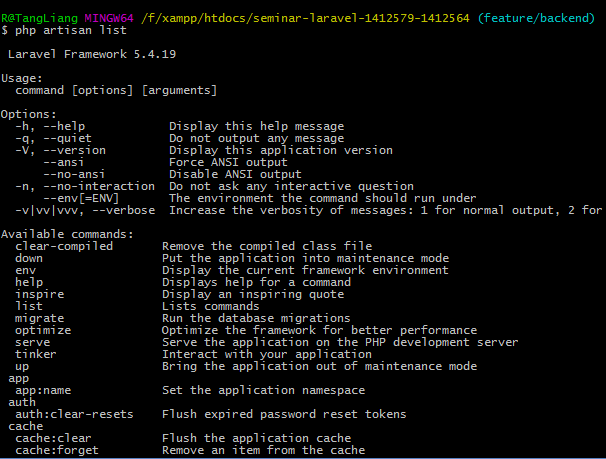Blade Template
Templade Engine là gì?
Đơn giản Template đó chính là một mẫu ngôn ngữ trình bày, giúp chúng ta tách biệt code PHP ra khỏi code HTML.
Blade Templates trong Laravel
Blade là một templating engine đơn giản và được Laravel tích hợp vào cho mình. Ngoài việc nó cung cấp những câu lệnh trong view, nó không cấm bạn sử dụng PHP trong view như các template engine khác. Tất cả các views của Blade sẽ được compile thành mã PHP thuần, cho nên nó sẽ không làm tăng quá nhiều chi phí của ứng dụng.
Mặc định chúng ta sẽ đặt tên cho các file dạng đuôi _*.blade.php_ (với * là tên file của bạn)
Chúng ta có thể làm gì với Blade?
Blade giúp ta quản lý các file view tốt hơn, khi chúng ta thiết kế view, có rất nhiều đoạn code bị lặp lại, vì vậy khi chúng ta chỉnh sửa lại một file nào đó, chúng ta buộc phải chỉnh sửa lại tất cả các view chứa nó.
Vì vậy Blade cung cấp cho chúng ta cơ chế thừa kế template, chúng ta có thể tách những đoạn code bị trùng lắp ra một file mới và bạn chỉ cần gọi file đó tại các view chúng ta sử dụng. Khi cần chỉnh sửa, ta chỉ cần chỉnh một file và tất cả các view đều được update thay vì phải chỉnh sửa toàn bộ các view.
Xét một ví dụ cơ bản về Blade Templade:
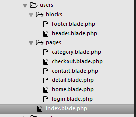Như hình ảnh phía trên, mình đã tách header và footer của website chính ra riêng, với view index.blade.php đơn giản nó chỉ chứa lời gọi đến 2 file trên và @yield('content') là nơi được sử dụng để hiển thị dữ liệu ở một vị trí đặt trước. Chả hạn như tại view home.blade.php hình kế thừa view cha là index.blade.php, sau đó mình chỉ cần trích nội dụng cần hiển thị vào @section. Ở trên mình đã nói là @yield sẽ là nơi nội dung của những section này được hiển thị.
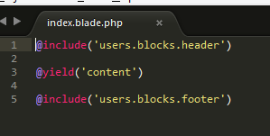Vậy không sử dụng PHP trong view thì chúng ta hiển thị dữ liệu được query từ database bằng cách nào? Blade chắc chắn cung cấp cho chúng ta một chức năng giúp chúng ta làm điều này, chúng ta có thể truyền dữ liệu sang view tại controller hoặc trực tiếp tại route, nó sẽ giúp chúng ta quản lý dữ liệu được tốt hơn và minh bạch hơn.
Ví dụ như mình sẽ truyền biến dữ liệu $product sang view để hiển thị nó.
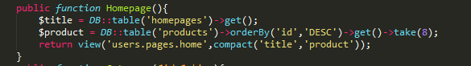Truy vấn từ database tại function Homepage
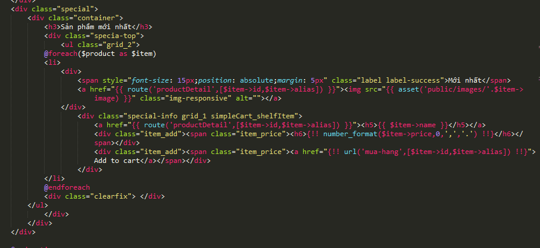Và hiển thị nó bằng cách foreach từng phần tử trong object đó
Tất nhiên bạn sẽ không bị giới hạn việc truyền bao nhiêu biến sang view, thậm chí bạn có thể sử dụng thẳng cấu trúc php bên trong view nếu bạn thấy cần thiết như ví dụ bên dưới chả hạn

Truy vấn từ database tại trực tiếp trong view
Hiển thị dữ liệu unscape và chưa unespace
Đối với Blade Template, nó đã cung cấp cho chúng ta hai hình thức hiển thị dữ liệu.
Đối với cách hiển thị dữ liệu bằng dấu {{ }}, mặc định dữ liệu khi sử dụng cặp dấu này sẽ được gửi qua hàm htmlentities, nhờ vậy mà chúng ta sẽ tránh được tấn công XSS khi kẻ xấu lợi dúng.
Còn khi bạn sử dụng cặp dấu {!! !!} thì dữ liệu sẽ không bị espace, mình thường sử dụng cặp dấu này nếu sử dụng CKeditor để soạn thảo và quản lý nội dung của website
Ví dụ
The current UNIX timestamp is {{ time() }}.
//unscape data
Hello, {!! $name !!}.
Cấu trúc điều kiện
Ngoài việc cung cấp việc kế thừa và hiển thị dữ liệu, Blade cũng đem lại cho chung ta các tiện ích cho các cấu trúc điều khiển cơ bản như cấu trúc rẽ nhánh, vòng lặp,...
Một số cấu trúc đơn giản chúng ta có thể thấy được
//Cấu trúc rẽ nhánh
@if (count($records) === 1)
I have one record!
@elseif (count($records) > 1)
I have multiple records!
@else
I don't have any records!
@endif
//Vòng lòng
@for ($i = 0; $i < 10; $i++)
The current value is {{ $i }}
@endfor
@foreach ($users as $user)
This is user {{ $user->id }}
@endforeach
@forelse ($users as $user)
{{ $user->name }}
@empty
No users
@endforelse
@while (true)
I'm looping forever.
@endwhile
//unlesss, nhưng mình thường dùng if hơn
@unless (Auth::check())
You are not signed in.
@endunless
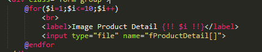
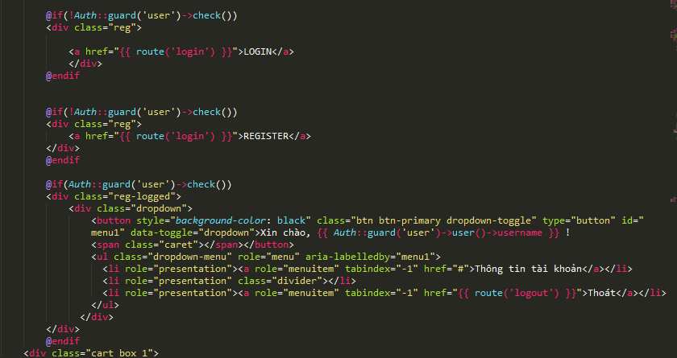
Thao tác với CSDL
Thứ quan trọng hầu như không thể thiếu trong bất cứ một ứng dụng web nào đó chính là cơ sở dữ liệu, Laravel hầu như cũng đã cung cấp cho chúng ta những gì tinh tuý nhất để giúp chúng ta nhanh chóng trong việc truy xuất và chỉnh sửa dữ liệu.
Laravel sử dụng PDO để kết nối với CSDL.Ngoài ra nó còn cung cấp cho chúng ta hai kiểu truy vấn cơ sở dữ liệu đặc trưng đó là Query Builder và Eloquent ORM. Vậy sự khác nhau của nó là gì? Chúng ta cùng tìm hiểu về nó nhé!
Query Builder
Query Builder của Laravel cho phép chúng ta truy vấn cơ sở dữ liệu nhanh chóng và tiện lợi. Bạn có thể sử dụng nó để truy vấn bất kỳ cơ sở dữ liệu nào mà nó hỗ trợ.
Tất nhiên như trên đã nói, nó được sử dụng PDO params binding để bảo vệ ứng dụng của bạn không bị hacker xâm nhập ăn cắp hoặc phá hoại CSDL, chống lại các cuộc tấn công SQL Injection.
Nói nhiều như vậy, tóm gọn một phần đó chính là Query Builder có thể giúp bạn truy vấn trực tiếp CSDL mà không phải thông qua một thằng nào khác như Eloquent ORM, bạn sẽ không phải khai báo quá nhiều thứ, chỉ cần có CSDL là bạn có thể sử dụng nó rồi.
Một số cú pháp đơn giản của Query Builder
//Đây là cú pháp đơn giản nhất giúp bạn lấy toàn bộ các record trong một bảng nào đó.
$temp = DB::table('tablename')->get();
//Cú pháp đơn giản về điều kiện where
$temp = DB::table('tablename')->where('id',$id)->get();
//Kết giữa hai bảng với nhau
$users = DB::table('users')
->join('contacts', 'users.id', '=', 'contacts.user_id')
->join('orders', 'users.id', '=', 'orders.user_id')
->select('users.*', 'contacts.phone', 'orders.price')
->get();
//orderBy
$users = DB::table('users')
->orderBy('name', 'desc')
->get();
//lastest
$user = DB::table('users')
->latest()
->first();
//và còn rất nhiều thứ khác Query Builder hỗ trợ
$users = DB::table('users')->count();
$price = DB::table('orders')->max('price');
$price = DB::table('orders')
->where('finalized', 1)
->avg('price');
//insert dữ liệu
DB::table('users')->insert([
['email' => 'taylor@example.com', 'votes' => 0],
['email' => 'dayle@example.com', 'votes' => 0]
]);
$id = DB::table('users')->insertGetId(
['email' => 'john@example.com', 'votes' => 0]
);
//update
DB::table('users')
->where('id', 1)
->update(['votes' => 1]);
//delete
DB::table('users')->delete();
DB::table('users')->where('votes', '>', 100)->delete();
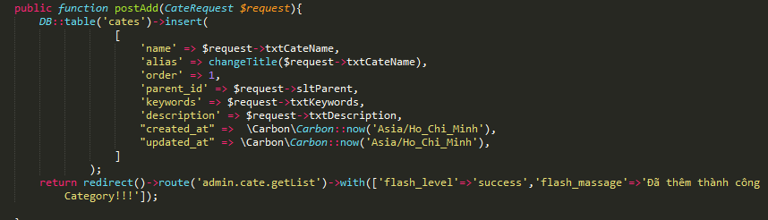
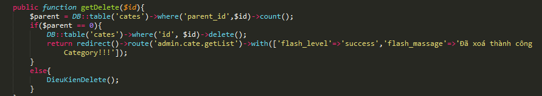
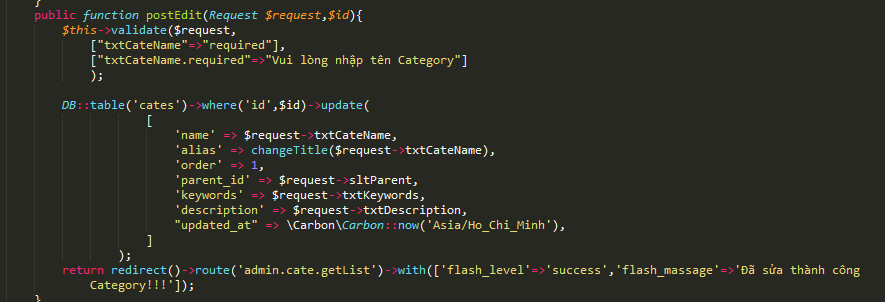
Eloquent ORM
Eloquent ORM đi kèm với Laravel cung cấp ActiveRecord đầy đủ, đẹp đẽ và đơn giản để làm việc với database. Mỗi bảng của database sẽ được ánh xạ qua 'Model', và model này được sử dụng để tương tác với bảng.
Tuy là vậy, ORM lại khá dài dòng khi chúng ta sử dụng nó, vì nó được ánh xạ qua Model, cho nên đối với tất cả các table trong cơ sở dữ liệu, chúng ta buộc phải khai báo lại thành mỗi Model riêng trên Laravel. Và khi bạn sử dụng, bạn buộc phải gọi Model đó trong Controller để sử dụng.
Một số cú pháp đơn giản của Eloquent ORM
//Trước hết ta phải gọi User từ App\User
use App\Cate;
//select từ bảng Cate
$parent = Cate::select('id','name','parent_id')->get()->toArray();
//save dữ liệu vào CSDL
$cate = new Cate;
$cate->name = $request->txtCateName;
$cate->alias = $request->txtCateName;
$cate->order = $request->txtOrder;
$cate->parent_id = $request->sltParent;
$cate->keywords = $request->txtKeywords;
$cate->description = $request->txtDescription;
$cate->save();
//sửa một record nào đó
$cate = Cate::find($id);
$cate->name = $request->txtCateName;
$cate->alias = $request->txtCateName;
$cate->order = $request->txtOrder;
$cate->parent_id = $request->sltParent;
$cate->keywords = $request->txtKeywords;
$cate->description = $request->txtDescription;
$cate->save();
//xoá một record với id
$product->delete($id);
//kết giữa hai bảng
$users = User::with('contacts', 'orders')
->select('users.*', 'contacts.phone', 'orders.price')->get;
Nên chọn cái nào để sử dụng?
Tuỳ vào nhu cầu của mỗi người cũng như mỗi project mà chúng ta lựa chọn cách nào để truy vấn dữ liệu. Đối với mình, mình thường sử dụng Query Builder hơn so với Eloquent ORM.
Query Builder
Khi ta sử dụng Query Builder, chúng ta không cần phải khai báo các Model, bạn hãy tưởng tượng, nếu bạn không biết một chút gì về cơ sở dữ liệu, hoặc cơ sở dữ liệu của bạn khá lớn chả hạn, thì Query Builder là lựa chọn tốt nhất, bạn chỉ cần biết cấu trúc câu lệnh và các thuộc tính của các bảng thôi thì bạn đã có thể dễ dàng truy vấn dữ liệu rồi. Tuy nhiên có một nhược điểm đó chính là câu lệnh của Query Buildẻ khá dài, nên đôi khi nó khiến code chúng ta dài hơn cũng như nhiều phần hơn.
Eloquent ORM
Còn đối với Eloquent, chúng ta buộc phải khai báo các Model, vì ORM sẽ ánh xạ qua các Model này để biết được mỗi bảng ở cơ sở dữ liệu được khai báo làm sao, nó sẽ khá mất công nếu bạn có một cơ sở dữ liệu quá lớn, lên đến vài chục hoặc cả trăm bảng, nhưng đổi lại, nó sẽ mang lại cho bạn một cách truy vấn cực kỳ ngon, ngắn và dễ hiểu. Đặc biệt thao tác kết giữa các bảng sẽ dễ dàng và đơn giản hơn so với Query Builder.
Ý kiến cá nhân về việc lựa chọn truy vấn giữa Query Builder và Eloquent ORM
Tuỳ vào mỗi project, mình vẫn ưu tiên chọn Query Builder hơn so với Eloquent ORM, một phần là do việc mỗi thành viên trong nhóm không phải ai cũng biết rõ về CSDL, hay CSDL quá nhiều bảng khiến cho việc khai báo Model dành cho Eloquent ORM quá phức tạp và mất thời gian. Query Builder sẽ giúp bạn rút ngắn việc khai báo quá nhiều Model hơn, đối với các project nhỏ như Demo Seminar, mình sử dụng Query Builder vì nó không cần phải kết và câu lệnh truy vấn không quá phức tạp, đôi khi đa phần mình chỉ copy và paste mà thôi!.
Còn đối với Eloquent ORM, nó thực sự tốt khi ta khai báo đầy đủ các Model, nó giúp bạn thao tác với câu truy vấn cực kỳ đơn giản và ngắn gọn, các thao các kết giữa các bảng cực kỳ dễ vì chúng ta đã khai báo sẵn chúng ở Model rồi.
Về tốc độ truy vấn
Hiện tại chưa có quá nhiều khác biệt nếu chúng ta truy vấn những cơ sở dữ liệu với số lượng record ít, tuy nhiên theo một số tài liệu thì Query Builder sẽ có tốc độ truy vấn tốt hơn so với Eloquent ORM khi những câu truy vấn cần thao tác với dữ liệu lớn.
Bảo mật
Cũng tương tự như vậy, Query Builder sử dụng PDO nhằm bảo vệ ứng dụng và tránh các lỗi về SQL Injection, còn Eloquent ORM thì không nên chúng ta đã biết chắc thằng Query Builder sẽ bảo mật hơn so với Eloquent ORM.
Request
Laravel cung cấp cho bạn một Request thực sự rất tuyệt vời, trong bất kỳ một ứng dụng web nào, dữ liệu luôn là thứ quan trọng nhất, nó được cung cấp bởi một form HTML, và Request sẽ giúp chúng ta lấy những dữ liệu này trước khi chúng ta làm việc trên trữ liệu đó.
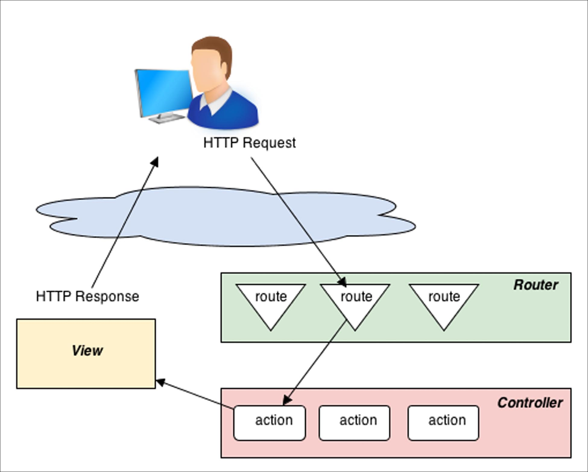Một ví dụ nhỏ khi ta dùng Request để lấy dữ liệu các trường trong Form
//CateRequest là validation giúp ta kiểm tra bảo toàn thông tin khi người dùng nhập. Sẽ nói đến ở phần dưới.
public function postAdd(CateRequest $request){
DB::table('cates')->insert(
[
'name' => $request->txtCateName,
'alias' => changeTitle($request->txtCateName),
'order' => 1,
'parent_id' => $request->sltParent,
'keywords' => $request->txtKeywords,
'description' => $request->txtDescription,
"created_at" => \Carbon\Carbon::now('Asia/Ho_Chi_Minh'),
"updated_at" => \Carbon\Carbon::now('Asia/Ho_Chi_Minh'),
]
);
return redirect()->route('admin.cate.getList')->with(['flash_level'=>'success','flash_massage'=>'Đã thêm thành công Category!!!']);
}
Request có nhiệm vụi quản lý các dữ liệu trên Route và truyền dữ liệu đó đến với Controller để xử lý
Ngoài ra, Request còn cung cấp cho chúng ta rất nhiều phương thức, ví dụ như phương thức giúp chúng ta lấy những thông tin của người dùng như IP ngươi fdùng, IP máy chũ, thông tin trình duyệt,...
Một ví dụ nhỏ về các phương thức của Request
// ví dụ URL https://boyvmt.github.io/1412579-1412564.github.io/seminar/laravel
$uri = $request->path();
// trả về seminar/laravel
echo $uri;
if($request->is('seminar/*')) {
// các đường dẫn bắt đầu bằng seminar, với ký tự * để trùng khớp với tất cả các chuỗi
}
if($request->is('seminar/laravel')) {
echo 'Đây là đường dẫn của bạn https://boyvmt.github.io/1412579-1412564.github.io/' . $request->path();
}
// ví dụ đường dẫn https://boyvmt.github.io/1412579-1412564.github.io/seminar/laravel?page=2
$url = $request->url();
// trả về https://boyvmt.github.io/1412579-1412564.github.io/seminar/laravel
echo $url;
//Nó sẽ trả về URL không có query string
//Nếu bạn muốn nó trả về URL có query string luôn thì hãy sử dụng fullurl
$full_url = $request->fullurl()
//kiểm tra xem phương thức yêu cầu là POST hay GET
$method = $request->method();
if ($request->isMethod('post')) {
echo 'POST request';
} else {
echo 'GET request';
}
//Phương thức liên quan tới người dùng của Request
//Ví dụ bây giờ bạn muốn lấy IP, tên Webbrowser của người dùng thì sao? Request cho phép bạn làm điều đó.
public function getUserInfo(Request $request){
$ip_address = $request->ip();
echo '
Địa chỉ IP người dùng: ' . $ip_address;
$server_address = $request->server('SERVER_ADDR');
echo '
Địa chỉ IP máy chủ: ' . $server_address;
$url_referer = $request->server('URL_REFERER');
echo '
Đường dẫn xuất phát: ' . $url_referer;
$user_agent = $request->header('User-Agent');
echo '
Thông tin về trình duyệt:' . $user_agent;
}
Validation
Đây có lẽ một tính năng mà hầu hết các bạn đều đã từng gặp qua, có bao giờ bạn đăng ký một account Facebook chả hạn, bạn quên gõ email, Facebook sẽ báo lại cho ban ngay lập tức là bạn phải nhập Email không? Đó chính là Validation.
Validation để làm gì? Validation được tạo ra để kiểm soát thông tin người dùng nhập có chính xác hay không, để đảm bảo rằng hệ thông bạn ghi nhận không phải là thông tin rác. Người dùng có thể quên mất điền vào một chỗ nào đó, bạn sẽ phải thông báo và bắt buộc người dùng phải nhập thông tin được yêu cầu.
Validation trong Laravel
Laravel đã cung cấp cho chúng ta một hệ thống Validation thực sự rất tuyệt vời và tiện lợi, bạn không cần phải thao tác quá nhiều hoặc viết ra những dòng code dài dòng để kiểm tra dữ liệu nữa. Laravel đã làm hết những gì bạn cần.
Vậy thì chúng ta sử dụng Validation Laravel bằng cách nào?
Khai báo trực tiếp trong một hàm thuộc Controller
Đây là một cách chúng ta có thể thao tác với Validation của Laravel, ta sẽ khai báo trực tiếp một validation trong chính một hàm trong Controller mà chúng ta muốn, tuy nhiên sẽ rất khó quản lý được nếu chúng ta có nhiều Validation, và bạn sẽ quên mất nó nằm ở đâu đó thì sao?
Một ví dụ về Validation trực tiếp trong hàm
public function login(Request $request){
$this->validate($request,[
'txtUser' => 'required',
'txtPass' => 'required'],
["txtUser.required"=>"Vui lòng nhập tài khoản",
"txtPass.required"=>"Vui lòng nhập mật khẩu"
]);
if(Auth::guard('admin')->attempt(['username' => $request->txtUser, 'password' => $request->txtPass],$request->remember)){
return redirect()->intended(route('admin.dashboard'));
}
return redirect()->back()->withInput($request->only('username','remember'))->with('status', 'Tài khoản hoặc mật khẩu không chính xác!');
}
Tạo một Request Validation giúp chúng ta quản lý dễ hơn
Laravel cũng cung cấp cho bạn một cách khác đó chính là tạo một Request Validation, giúp bạn quản lý từng Validation thuộc từng một Form dữ liệu nào đó, tránh tình trạng bạn phải khai báo trực tiếp trong hàm, và khi khai báo riêng như thế này, bạn chỉ việc mang nó ra và có thể sử dụng ở nhiều hàm có form dữ liệu giống Request Validation này.
CLI Artisan giúp bạn tạo một Request nhanh bằng câu lệnh:
php artisan make:request *tênrequest
Một ví dụ về Validation bằng cách tạo một Request mới
<?php
namespace App\Http\Requests;
use Illuminate\Foundation\Http\FormRequest;
class ProductRequest extends FormRequest
{
public function authorize()
{
return true;
}
public function rules()
{
return [
'sltParent' =>'numeric|min:1',
'txtName' => 'required|unique:products,name',
'fImages' => 'required|image'
];
}
public function messages(){
return [
'sltParent.min' => 'Vui lòng chọn Category chứa sản phẩm',
'fImages.image' => 'Vui lòng chọn file hình ảnh',
'txtName.required' => 'Vui lòng nhập tên sản phẩm',
'txtName.unique' => 'Tên sản phẩm đã tồn tại',
'fImages.required' => 'Vui lòng chọn ảnh đại diện hoặc ảnh đại diện có kích thước quá lớn'
];
}
}
//Gọi nó tại Controller
public function postAdd(ProductRequest $request){
$imgName = changeTitle(Input::file('fImages')->getClientOriginalName());
//echo $imgName;
$product_id = DB::table('products')->insertGetId(
[
"name" => $request->txtName,
"alias" => changeTitle($request->txtName),
"price" => $request->txtPrice,
"intro" => $request->txtIntro,
"content" => $request->txtContent,
"image" => $imgName,
"keywords" => $request->txtKeywords,
"description" => $request->txtDescription,
"user_id" => 1,
"cate_id" => $request->sltParent,
"created_at" => \Carbon\Carbon::now('Asia/Ho_Chi_Minh'),
"updated_at" => \Carbon\Carbon::now('Asia/Ho_Chi_Minh'),
]
);
Input::file('fImages')->move('resources/upload/images',$imgName);
//echo $product_id;
if(Input::hasFile('fProductDetail')){
foreach (Input::file('fProductDetail') as $file) {
if(isset($file)){
DB::table('product_images')->insert(
[
"image" => changeTitle($file->getClientOriginalName()),
"product_id" => $product_id,
"created_at" => \Carbon\Carbon::now('Asia/Ho_Chi_Minh'),
"updated_at" => \Carbon\Carbon::now('Asia/Ho_Chi_Minh'),
]
);
$file->move('resources/upload/details',changeTitle($file->getClientOriginalName()));
}
}
}
return redirect()->route('admin.product.getList')->with(['flash_level'=>'success','flash_massage'=>'Đã thêm sản phẩm thành công !!!']);
}
Vậy Validation hỗ trợ những dạng kiểm tra nào?
Validation Laravel hỗ trợ rất nhiều, nó bao gồm nhiều quy tắc để bạn có thể dễ dàng quản lý dữ liệu trên Form người dùng tốt hơn, từ việc yêu cầu bắt buộc người dùng nhập thông tin, đến kiểm tra nó có phải là số hay không? Giới hạn min và max, và còn rất nhiều thứ nữa, bạn có thể tham khảo danh sách dưới đây.
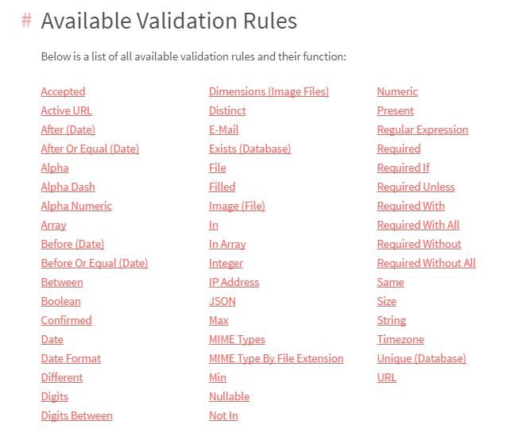Xem đầy đủ trên trang chủ Laravel
Một số tính năng đặc biệt trong Laravel
Ngoài những tính năng được giới thiệu phía trên, Laravel còn rất nhiều tính năng nhỏ bên trong, tuy nhiên nó lại giúp cho chúng ta rất nhiều trong website của mình, và chúng ta không phải mất quá nhiều công sức để làm việc đó như thường phải làm khi code PHP thuần. Hoặc những công cụ giúp chúng ta thao tác nhanh với dữ liệu trong project của mình chả hạn.
Tinker
Đây là một thứ khá lạ và ít người biết đến trong Laravel, mình cũng chỉ mới khám phá được nó trong một số bài tham khảo gần đây mà thôi, dù cũng đã biết Laravel một thời gian.
Tinker được kích hoạt từ CLI Artisan của Laravel, nó là một repl (read-eval-print loop, với Tinker, nó có thể giúp ta nhanh chóng thao tác dữ liệu trong project của mình, thao tác với cả CSDL (thông qua Model được khai báo), ngoài chúng ta có thể viết hàm trên nó, tuy nhiên chắc không nhiều người rảnh để viết hàm trên command line đâu nhỉ? :D
Chúng ta gọi Tinker bằng cú phápphp artisan tinker
Một số thao tác với Tinker
//đếm số lượng trong bảng user
>>> App\User::count()
=> 2
>>> App\Admin::count()
=> 1
//tạo một biến model mới
>>> $user = new App\User
=> App\User {#690}
>>> $user = new App\User;
=> App\User {#685}
>>> $user->username = 'test'
=> "test"
>>> $user->passwor = Hash::make(123456)
=> "$2y$10$R3I11/qIymzOD/KTN6BD6OeepaSKxJNRr5pjEoecQsxPRFeiD5.Te"
>>> $user->save()
//gặp lỗi Tinker cũng sẽ báo
Illuminate\Database\QueryException with message 'SQLSTATE[42S22]: Column not found: 1054 Unknown column 'passwor' in 'field list' (SQL: insert into `users` (`usernam
e`, `passwor`, `updated_at`, `created_at`) values (test, $2y$10$R3I11/qIymzOD/KTN6BD6OeepaSKxJNRr5pjEoecQsxPRFeiD5.Te, 2017-05-02 16:22:16, 2017-05-02 16:22:16))'
>>> $user->password = Hash::make(123456)
=> "$2y$10$dSp7UtaBR6gxpsNprz83aOPxA4QIQl2zkTLRqRPG0O.XRlYi.crMi"
>>> $user->save()
Illuminate\Database\QueryException with message 'SQLSTATE[42S22]: Column not found: 1054 Unknown column 'passwor' in 'field list' (SQL: insert into `users` (`usernam
e`, `passwor`, `updated_at`, `created_at`, `password`) values (test, $2y$10$R3I11/qIymzOD/KTN6BD6OeepaSKxJNRr5pjEoecQsxPRFeiD5.Te, 2017-05-02 16:22:16, 2017-05-02 16
:22:16, $2y$10$dSp7UtaBR6gxpsNprz83aOPxA4QIQl2zkTLRqRPG0O.XRlYi.crMi))'
>>> $user = new App\User;
=> App\User {#687}
>>> $user->username = 'test'
=> "test"
>>> $user->password = Hash::make(123456)
=> "$2y$10$L2y1uSyBBIoI0PIEnyu4wuuserZ3LX/JVoLOHE3NV.Kc.KjUbD8Fu"
>>> $user->save()
//Save user mới thành công
Illuminate\Database\QueryException with message 'SQLSTATE[HY000]: General error: 1364 Field 'level' doesn't have a default value (SQL: insert into `users` (`username
`, `password`, `updated_at`, `created_at`) values (test, $2y$10$L2y1uSyBBIoI0PIEnyu4wuuserZ3LX/JVoLOHE3NV.Kc.KjUbD8Fu, 2017-05-02 16:23:07, 2017-05-02 16:23:07))'
>>> $user->level = 0
=> 0
>>> $user->save()
=> true
//bảng user đã tăng lên 1 sau khi ta save
>>> App\User::count()
=> 3
Migration
Đây cũng là điều thứ hai mình muốn nói đến với các tính năng đặc biệt của Laravel, Migration cho phép bạn thao tác với cơ sở dữ liệu rất tuyệt vời, bạn không phải làm quá nhiều việc với phpMyađmin.
Nói nhiều như vậy rồi rốt cuộc Migration giúp ta làm cái gì? Nó cho phép bạn tạo, xoá, rollback, refresh,...và nhiều hơn thế nữa.
Bạn có thể tham khảo một số lệnh của Migration dưới đây
Vậy ta hãy thử tìm hiểu cách tạo một bảng thông qua Migration nhé
Trước tiên hãy tạo một migration nhờ vào câu lệnh CLI Artisan cung cấp
php artisan make:migration *tablename
Đây là thông tin bảng users mình tạo ra
<?php
use Illuminate\Database\Schema\Blueprint;
use Illuminate\Database\Migrations\Migration;
class CreateUsersTable extends Migration {
/**
* Run the migrations.
*
* @return void
*/
public function up()
{
Schema::create('users', function(Blueprint $table)
{
$table->increments('id')->unique();
$table->string('username');
$table->string('password', 60);
$table->string('email')->unique();
$table->tinyInteger('level');
$table->rememberToken();
$table->timestamps();
});
}
/**
* Reverse the migrations.
*
* @return void
*/
public function down()
{
Schema::drop('users');
}
}
Còn đây là đối với bảng products
<?php
use Illuminate\Database\Schema\Blueprint;
use Illuminate\Database\Migrations\Migration;
class CreateProductsTable extends Migration {
/**
* Run the migrations.
*
* @return void
*/
public function up()
{
Schema::create('products', function(Blueprint $table)
{
$table->increments('id');
$table->string('name')->unique();
$table->string('alias');
$table->integer('price');
$table->text('intro');
$table->longText('content');
$table->string('image');
$table->string('keywords');
$table->string('description');
//khai báo khoá ngoại
$table->integer('user_id')->unsigned();
$table->foreign('user_id')->references('id')->on('users')->onDelete('cascade');
$table->integer('cate_id')->unsigned();
//khai báo khoá ngoại
$table->foreign('cate_id')->references('id')->on('cates')->onDelete('cascade');
$table->timestamps();
});
}
/**
* Reverse the migrations.
*
* @return void
*/
public function down()
{
Schema::drop('products');
}
}
Class này có 2 function là up() và down(). Function up() sẽ được gọi khi bạn chạy lệnh php artisan migrate còn function down() sẽ được gọi khi bạn chạy lệnh php artisan migrate:rollback .
Bước cuối cùng bạn chỉ cần thực hiện thao tác migrate nó vào database thôi, tuy nhiên hãy nhớ rằng, hãy tạo những bảng cha trước các bảng con, vì nếu chúng ta không làm vậy khi migrate sẽ gặp lỗi đứa con (khoá ngoại) không biết cha mình là ai đó nhé :Dphp artisan migrate
Auto pagination
Một trong những điều quan trọng nhất khi chúng ta xây dựng một website đó là việc chúng phân trang ra sau nếu như chúng ta có hàng trăm, hàng ngàn record. Đối với khi code PHP thuần, ta phải đếm trang, rồi select từng trang và chia trang sao cho giao diện hợp lý. Rất mất thời giản phải không, đối với Laravel điều này thật dễ dàng.
Hãy xem cùng mình nhé
//đây là cách chúng ta phân trang khi query
//lấy danh sách các sản phẩm liền quan tới sản phẩm hiện tại
public function productDetail($id,$alias){
$product_detail = DB::table('products')->where('id',$id)->first();
$images = DB::table('product_images')->select('id','image')->where('product_id',$id)->get();
//Hiện số trang
$related = DB::table('products')->where('cate_id',$product_detail->cate_id)->where('id','<>',$id)->paginate(2);
//chỉ hiện nút Next và Pre
$related = DB::table('products')->where('cate_id',$product_detail->cate_id)->where('id','<>',$id)->simplePaginate(2);
return view('users.pages.detail',compact('product_detail','images','related'));
}
//Và cách chúng ta phân trang như thế nào?
//Chúng ta chỉ cần tìm 1 chỗ hợp lý và sử dụng hàm này thôi
{{ $related->links() }}
Và đây là kết quả chúng ta được, hơi vỡ giao diện tí thui :D
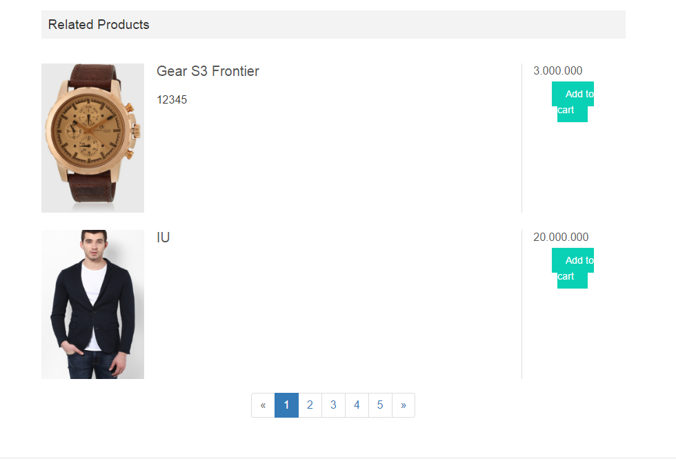Laravel sở hữu một cộng đồng Open Source cực kỳ lớn
Chúng ta đã biết rằng, Laravel là Framework PHP được các lập trình viên đánh giá tốt nhất và phổ biến nhất thế giới trong những năm qua, một phần vì nó rất tuyệt vời, còn phần khác đó chính là nó có một cộng đồng lập trình viên rất lớn và rất nhiều lập trình viên support cho em nó.
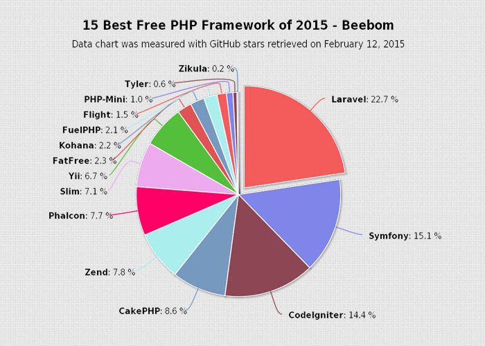Như mình đã nói tới, vì cộng đồng rất lớn nên số lượng package open source rất nhiều, bạn không cần phải quá biết nhiều, hoặc bạn không có nhiều thời gian để thực hiện phần đó, bạn có thể dễ dàng tìm kiếm một package hỗ trợ bạn làm việc đó.
Như mình chả với, với website demo của mình hiện tại, mình có một package hỗ trợ tạo nhanh một Giỏ hàng - Shopping Cart chỉ vài thao tác cơ bản, bạn không phải quá mất thời gian để xây dựng lại một hệ thống riêng dành cho bạn. Chi tiết package đó bạn có thể xem TẠI ĐÂY
Tóm lại
Laravel Framework là một framework rất dễ học và dễ làm việc với nó, đây là framework khởi đầu cho những bạn đã từng tiếp xúc với PHP và muốn bước qua một framework mới.